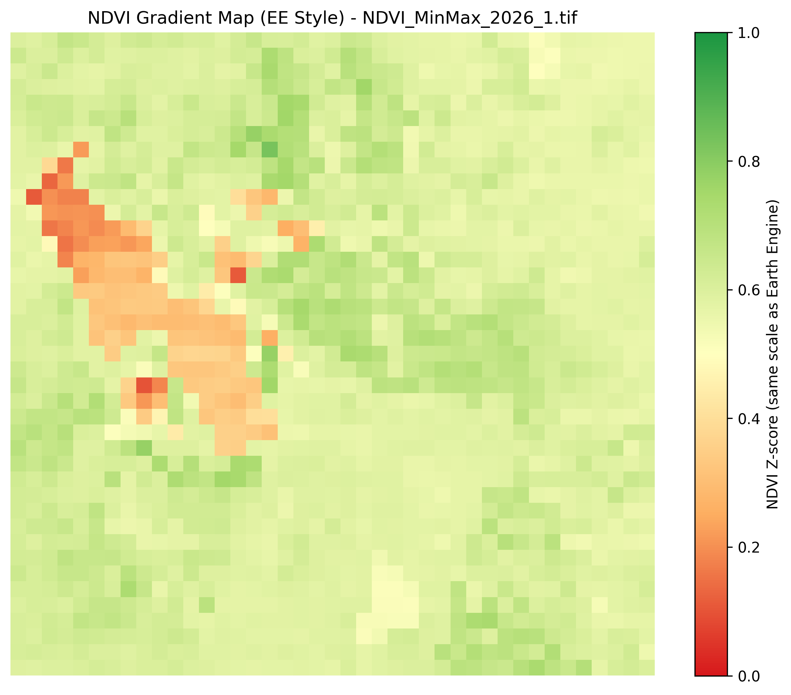

How to Read Our Maps
Read this to understand how we make our maps and how to read them.

Monthly Report, January 2026
January 2026 NDVI increased across the Wasatch Front compared to December, with most vegetated areas between 0.7–0.9. Likely due to snowmelt exposing previous vegetation.
Monthly Report, December 2025
December 2025 NDVI decreased across the Wasatch Front compared to November, with most vegetated areas between 0.6–0.8. Apparent NDVI increases over the Great Salt Lake reflect relative measurement effects rather than vegetation growth.